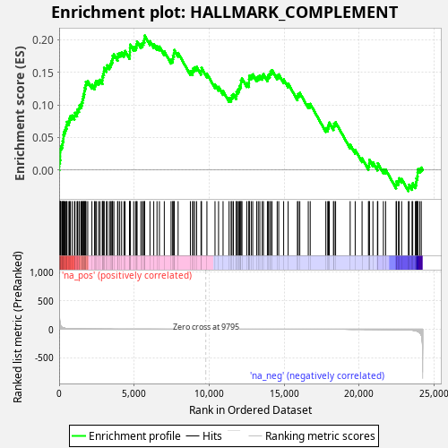
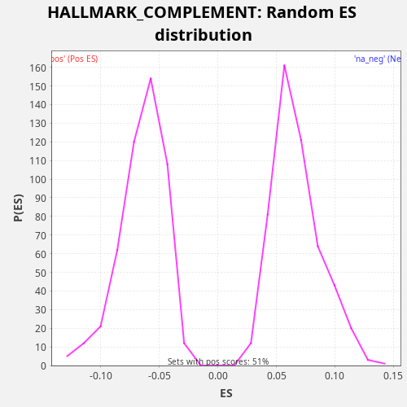

| Dataset | LabCL |
| Phenotype | NoPhenotypeAvailable |
| Upregulated in class | na_pos |
| GeneSet | HALLMARK_COMPLEMENT |
| Enrichment Score (ES) | 0.2065503 |
| Normalized Enrichment Score (NES) | 3.0675251 |
| Nominal p-value | 0.0 |
| FDR q-value | 0.0 |
| FWER p-Value | 0.0 |

| SYMBOL | RANK IN GENE LIST | RANK METRIC SCORE | RUNNING ES | CORE ENRICHMENT | |
|---|---|---|---|---|---|
| 1 | C1S | 8 | 455.041 | 0.0056 | Yes |
| 2 | LAP3 | 11 | 350.772 | 0.0115 | Yes |
| 3 | DGKG | 56 | 111.784 | 0.0156 | Yes |
| 4 | ME1 | 73 | 86.764 | 0.0209 | Yes |
| 5 | PLSCR1 | 74 | 86.214 | 0.0269 | Yes |
| 6 | CCL5 | 76 | 84.339 | 0.0328 | Yes |
| 7 | RNF4 | 127 | 50.129 | 0.0366 | Yes |
| 8 | C4BPB | 206 | 30.004 | 0.0394 | Yes |
| 9 | IL6 | 234 | 27.409 | 0.0442 | Yes |
| 10 | PSMB9 | 283 | 23.028 | 0.0481 | Yes |
| 11 | C1R | 287 | 22.870 | 0.0540 | Yes |
| 12 | CFB | 325 | 19.967 | 0.0584 | Yes |
| 13 | IRF7 | 392 | 15.987 | 0.0616 | Yes |
| 14 | F8 | 436 | 14.192 | 0.0658 | Yes |
| 15 | CASP3 | 499 | 12.183 | 0.0691 | Yes |
| 16 | RASGRP1 | 525 | 11.337 | 0.0741 | Yes |
| 17 | OLR1 | 651 | 8.269 | 0.0748 | Yes |
| 18 | IRF2 | 693 | 7.593 | 0.0791 | Yes |
| 19 | RHOG | 747 | 6.864 | 0.0828 | Yes |
| 20 | ANXA5 | 868 | 5.590 | 0.0838 | Yes |
| 21 | CP | 1018 | 4.348 | 0.0835 | Yes |
| 22 | CEBPB | 1057 | 4.080 | 0.0879 | Yes |
| 23 | PPP2CB | 1194 | 3.311 | 0.0882 | Yes |
| 24 | BRPF3 | 1225 | 3.165 | 0.0929 | Yes |
| 25 | DPP4 | 1321 | 2.692 | 0.0949 | Yes |
| 26 | HSPA5 | 1360 | 2.558 | 0.0993 | Yes |
| 27 | EHD1 | 1464 | 2.243 | 0.1010 | Yes |
| 28 | VCPIP1 | 1523 | 2.103 | 0.1045 | Yes |
| 29 | CASP1 | 1561 | 1.991 | 0.1089 | Yes |
| 30 | CASP10 | 1606 | 1.902 | 0.1131 | Yes |
| 31 | USP14 | 1647 | 1.801 | 0.1174 | Yes |
| 32 | CD55 | 1683 | 1.714 | 0.1219 | Yes |
| 33 | IRF1 | 1715 | 1.663 | 0.1265 | Yes |
| 34 | LGMN | 1770 | 1.539 | 0.1302 | Yes |
| 35 | USP15 | 1788 | 1.517 | 0.1355 | Yes |
| 36 | C2 | 1908 | 1.338 | 0.1365 | Yes |
| 37 | CBLB | 2185 | 1.022 | 0.1310 | Yes |
| 38 | USP8 | 2357 | 0.864 | 0.1298 | Yes |
| 39 | GNB4 | 2403 | 0.825 | 0.1339 | Yes |
| 40 | CPM | 2474 | 0.775 | 0.1370 | Yes |
| 41 | APOBEC3G | 2624 | 0.681 | 0.1367 | Yes |
| 42 | AKAP10 | 2721 | 0.630 | 0.1387 | Yes |
| 43 | CTSO | 2883 | 0.556 | 0.1380 | Yes |
| 44 | L3MBTL4 | 2888 | 0.554 | 0.1437 | Yes |
| 45 | LAMP2 | 2933 | 0.533 | 0.1479 | Yes |
| 46 | S100A13 | 2987 | 0.509 | 0.1516 | Yes |
| 47 | TFPI2 | 2998 | 0.504 | 0.1572 | Yes |
| 48 | PSEN1 | 3156 | 0.437 | 0.1566 | Yes |
| 49 | CTSL | 3197 | 0.423 | 0.1609 | Yes |
| 50 | NOTCH4 | 3345 | 0.377 | 0.1607 | Yes |
| 51 | CPQ | 3422 | 0.352 | 0.1635 | Yes |
| 52 | TIMP2 | 3478 | 0.340 | 0.1672 | Yes |
| 53 | ACTN2 | 3551 | 0.325 | 0.1701 | Yes |
| 54 | PFN1 | 3569 | 0.320 | 0.1754 | Yes |
| 55 | SERPINE1 | 3653 | 0.300 | 0.1779 | Yes |
| 56 | CTSS | 3897 | 0.251 | 0.1738 | Yes |
| 57 | PRCP | 3928 | 0.246 | 0.1785 | Yes |
| 58 | CD36 | 4042 | 0.226 | 0.1797 | Yes |
| 59 | LYN | 4168 | 0.204 | 0.1805 | Yes |
| 60 | GRB2 | 4325 | 0.184 | 0.1800 | Yes |
| 61 | APOBEC3F | 4399 | 0.174 | 0.1829 | Yes |
| 62 | PCSK9 | 4692 | 0.141 | 0.1767 | Yes |
| 63 | CASP7 | 4717 | 0.138 | 0.1817 | Yes |
| 64 | GNAI2 | 4725 | 0.137 | 0.1873 | Yes |
| 65 | PCLO | 4739 | 0.136 | 0.1927 | Yes |
| 66 | APOC1 | 4972 | 0.116 | 0.1890 | Yes |
| 67 | CDA | 5099 | 0.105 | 0.1898 | Yes |
| 68 | PLA2G4A | 5158 | 0.101 | 0.1933 | Yes |
| 69 | GCA | 5199 | 0.099 | 0.1976 | Yes |
| 70 | JAK2 | 5448 | 0.082 | 0.1932 | Yes |
| 71 | PIK3CA | 5552 | 0.076 | 0.1949 | Yes |
| 72 | ERAP2 | 5621 | 0.072 | 0.1981 | Yes |
| 73 | CSRP1 | 5684 | 0.069 | 0.2014 | Yes |
| 74 | CASP4 | 5705 | 0.068 | 0.2066 | Yes |
| 75 | CTSV | 6057 | 0.051 | 0.1979 | No |
| 76 | CTSB | 6310 | 0.042 | 0.1934 | No |
| 77 | TIMP1 | 6527 | 0.035 | 0.1904 | No |
| 78 | DOCK10 | 6689 | 0.031 | 0.1897 | No |
| 79 | PDGFB | 7013 | 0.023 | 0.1822 | No |
| 80 | PRDM4 | 7464 | 0.014 | 0.1695 | No |
| 81 | ADAM9 | 7574 | 0.013 | 0.1709 | No |
| 82 | STX4 | 7594 | 0.012 | 0.1760 | No |
| 83 | LIPA | 7654 | 0.012 | 0.1795 | No |
| 84 | PPP4C | 7683 | 0.011 | 0.1843 | No |
| 85 | CD46 | 7935 | 0.008 | 0.1799 | No |
| 86 | PRKCD | 8752 | 0.002 | 0.1519 | No |
| 87 | COL4A2 | 8900 | 0.002 | 0.1518 | No |
| 88 | SH2B3 | 8942 | 0.001 | 0.1560 | No |
| 89 | CALM3 | 9042 | 0.001 | 0.1579 | No |
| 90 | WAS | 9171 | 0.001 | 0.1585 | No |
| 91 | PDP1 | 9462 | 0.000 | 0.1524 | No |
| 92 | RBSN | 9496 | 0.000 | 0.1570 | No |
| 93 | C9 | 9855 | 0.000 | 0.1481 | No |
| 94 | GPD2 | 10395 | -0.000 | 0.1316 | No |
| 95 | PLAT | 10632 | -0.000 | 0.1278 | No |
| 96 | RCE1 | 10932 | -0.001 | 0.1213 | No |
| 97 | PRSS36 | 11333 | -0.002 | 0.1107 | No |
| 98 | S100A12 | 11469 | -0.003 | 0.1110 | No |
| 99 | KIF2A | 11525 | -0.003 | 0.1147 | No |
| 100 | CFH | 11621 | -0.004 | 0.1167 | No |
| 101 | F3 | 11808 | -0.005 | 0.1149 | No |
| 102 | MAFF | 11831 | -0.005 | 0.1199 | No |
| 103 | RABIF | 11905 | -0.006 | 0.1229 | No |
| 104 | KCNIP2 | 11996 | -0.007 | 0.1251 | No |
| 105 | SIRT6 | 12040 | -0.007 | 0.1292 | No |
| 106 | ITGAM | 12122 | -0.007 | 0.1318 | No |
| 107 | CTSD | 12126 | -0.008 | 0.1377 | No |
| 108 | ZEB1 | 12195 | -0.008 | 0.1408 | No |
| 109 | MMP15 | 12514 | -0.011 | 0.1335 | No |
| 110 | MSRB1 | 12660 | -0.013 | 0.1335 | No |
| 111 | ATOX1 | 12665 | -0.013 | 0.1392 | No |
| 112 | LGALS3 | 12677 | -0.013 | 0.1447 | No |
| 113 | CXCL1 | 12810 | -0.015 | 0.1452 | No |
| 114 | GMFB | 12910 | -0.016 | 0.1470 | No |
| 115 | FYN | 13171 | -0.020 | 0.1422 | No |
| 116 | CTSH | 13280 | -0.021 | 0.1437 | No |
| 117 | CR2 | 13385 | -0.023 | 0.1453 | No |
| 118 | LRP1 | 13545 | -0.026 | 0.1446 | No |
| 119 | LCK | 13624 | -0.027 | 0.1474 | No |
| 120 | GNB2 | 13889 | -0.032 | 0.1423 | No |
| 121 | C3 | 13946 | -0.034 | 0.1460 | No |
| 122 | KLK1 | 14044 | -0.036 | 0.1479 | No |
| 123 | KCNIP3 | 14102 | -0.038 | 0.1515 | No |
| 124 | SRC | 14198 | -0.040 | 0.1535 | No |
| 125 | HPCAL4 | 14541 | -0.049 | 0.1452 | No |
| 126 | CLU | 14644 | -0.052 | 0.1470 | No |
| 127 | FN1 | 14973 | -0.064 | 0.1393 | No |
| 128 | SPOCK2 | 15271 | -0.075 | 0.1329 | No |
| 129 | GNAI3 | 15891 | -0.100 | 0.1131 | No |
| 130 | TNFAIP3 | 15945 | -0.102 | 0.1169 | No |
| 131 | CTSC | 16050 | -0.107 | 0.1185 | No |
| 132 | PRSS3 | 16615 | -0.141 | 0.1010 | No |
| 133 | DYRK2 | 16745 | -0.151 | 0.1016 | No |
| 134 | ANG | 17786 | -0.242 | 0.0644 | No |
| 135 | GZMB | 17914 | -0.255 | 0.0651 | No |
| 136 | GNG2 | 17960 | -0.261 | 0.0692 | No |
| 137 | CDH13 | 18015 | -0.269 | 0.0729 | No |
| 138 | CALM1 | 18293 | -0.304 | 0.0673 | No |
| 139 | SERPING1 | 18339 | -0.310 | 0.0714 | No |
| 140 | PIM1 | 18438 | -0.322 | 0.0733 | No |
| 141 | MMP13 | 19409 | -0.506 | 0.0389 | No |
| 142 | XPNPEP1 | 19744 | -0.591 | 0.0310 | No |
| 143 | FDX1 | 20202 | -0.735 | 0.0180 | No |
| 144 | CDK5R1 | 20628 | -0.932 | 0.0063 | No |
| 145 | PIK3CG | 20677 | -0.959 | 0.0103 | No |
| 146 | CASP9 | 20691 | -0.965 | 0.0157 | No |
| 147 | HSPA1A | 20927 | -1.094 | 0.0119 | No |
| 148 | PHEX | 21228 | -1.273 | 0.0054 | No |
| 149 | RAF1 | 21252 | -1.290 | 0.0103 | No |
| 150 | USP16 | 21624 | -1.655 | 0.0009 | No |
| 151 | DOCK9 | 21773 | -1.829 | 0.0007 | No |
| 152 | DGKH | 22471 | -3.368 | -0.0223 | No |
| 153 | PLAUR | 22499 | -3.469 | -0.0175 | No |
| 154 | CA2 | 22631 | -3.971 | -0.0170 | No |
| 155 | CD59 | 22671 | -4.140 | -0.0126 | No |
| 156 | ZFPM2 | 22840 | -5.104 | -0.0137 | No |
| 157 | PREP | 23293 | -9.660 | -0.0265 | No |
| 158 | GATA3 | 23342 | -10.580 | -0.0225 | No |
| 159 | KYNU | 23535 | -14.450 | -0.0245 | No |
| 160 | PLA2G7 | 23580 | -15.947 | -0.0204 | No |
| 161 | LTA4H | 23760 | -23.944 | -0.0219 | No |
| 162 | MMP14 | 23817 | -27.829 | -0.0183 | No |
| 163 | DOCK4 | 23830 | -28.481 | -0.0128 | No |
| 164 | DUSP5 | 23893 | -34.693 | -0.0094 | No |
| 165 | SERPINA1 | 23906 | -35.915 | -0.0040 | No |
| 166 | SERPINB2 | 23924 | -38.559 | 0.0013 | No |
| 167 | DUSP6 | 24053 | -60.792 | 0.0019 | No |
| 168 | S100A9 | 24152 | -102.437 | 0.0038 | No |

{kind=link}
{kind=link}